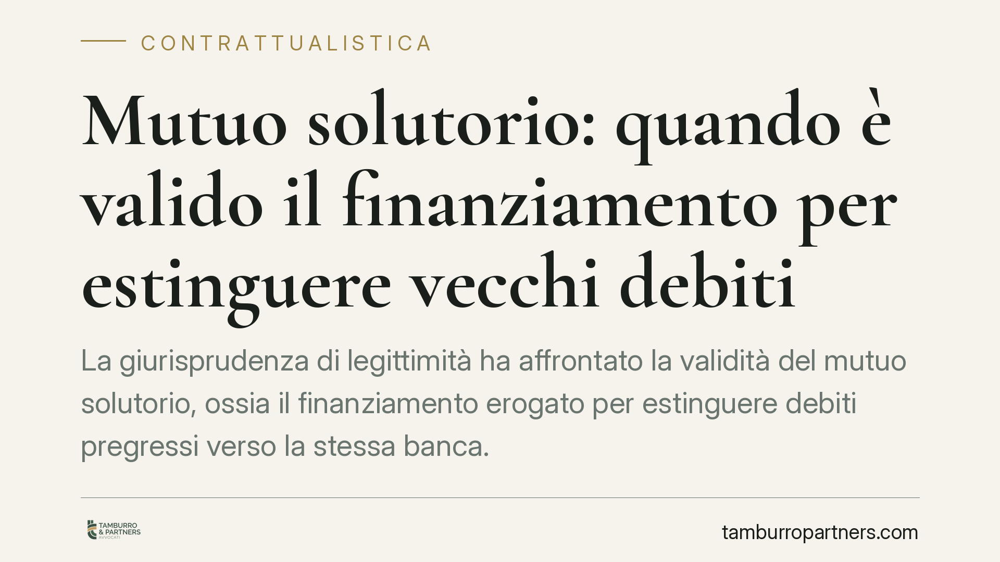

Mutuo solutorio: quando è valido il finanziamento per estinguere vecchi debiti
La giurisprudenza di legittimità ha affrontato la validità del mutuo solutorio, ossia il finanziamento erogato per estinguere debiti pregressi verso la stessa banca. Il punto decisivo è l'effettiva disponibilità giuridica della somma da parte del debitore. La questione incide sul valore di titolo esecutivo del contratto e sulla posizione di garanti, fideiussori e creditori concorrenti.

Il fatto
Un'operazione ricorrente nella prassi bancaria è il mutuo solutorio: la banca eroga una nuova somma che il cliente utilizza, in tutto o in parte, per estinguere esposizioni preesistenti verso la medesima banca. L'interrogativo giuridico è duplice: quel contratto è valido? E può fungere da titolo esecutivo, cioè da documento che consente alla banca di agire direttamente per il recupero senza dover prima ottenere una sentenza di condanna?
La risposta ruota attorno a un concetto tecnico: la disponibilità giuridica della somma mutuata da parte del debitore.
Inquadramento normativo
Occorre anzitutto distinguere due figure che non vanno confuse.
Il mutuo di scopo è un finanziamento vincolato a una destinazione tipica o convenzionalmente pattuita (ad esempio l'acquisto di un immobile o un investimento agevolato): la destinazione entra nella causa del contratto e la sua violazione può inciderne sulla validità.
Il mutuo solutorio è invece il finanziamento erogato allo scopo di estinguere un debito pregresso. Qui la destinazione non integra un vincolo causale tipico: la somma serve a ripianare un'esposizione già esistente. Sono istituti concettualmente distinti e non vanno usati come sinonimi.
Il mutuo è un contratto reale (art. 1813 c.c.): si perfeziona con la consegna della somma. La questione dibattuta riguarda però la nozione di consegna. Non è necessaria la *traditio* materiale, cioè la consegna fisica del denaro: è sufficiente che la somma entri nella disponibilità giuridica del mutuatario, tipicamente mediante accredito sul suo conto corrente. Da lì il debitore può disporne, anche per estinguere il debito preesistente.
Sul valore di titolo esecutivo del mutuo (rilevante ai fini dell'art. 474 c.p.c.) e sulla sua opponibilità nell'espropriazione la Corte di cassazione è intervenuta con pronuncia delle Sezioni Unite nel 2024. Il riferimento numerico esatto della sentenza è in corso di verifica sulla fonte primaria e non viene qui citato in via definitiva: il principio consolidato è comunque quello per cui l'accredito della somma sul conto del debitore integra la disponibilità giuridica idonea a perfezionare il contratto.
Implicazioni pratiche
Gli effetti variano a seconda del soggetto coinvolto.
Per la banca. Se la somma è stata effettivamente accreditata sul conto del cliente, il contratto di mutuo tende a reggere anche quando il denaro sia poi servito a ripianare esposizioni pregresse. Resta però centrale la ricostruzione dei flussi: un'operazione meramente contabile, priva di reale messa a disposizione della provvista, è più esposta a contestazione.
Per la società in crisi. L'operazione va valutata con attenzione nell'ottica di eventuali procedure concorsuali. La trasformazione di un credito chirografario in credito assistito da garanzia reale può essere scrutinata sotto il profilo della par condicio e delle azioni revocatorie.
Per il garante e il fideiussore. È il fronte più delicato. Chi ha prestato garanzia personale su un debito "vecchio" può ritrovarsi obbligato su un rapporto formalmente nuovo. Occorre verificare se e in che misura la garanzia originaria si estenda al mutuo solutorio, e se il garante abbia prestato un consenso informato all'operazione.
Cosa fare in concreto
- Verificate l'accredito effettivo. Recuperate l'estratto conto che documenta l'ingresso della somma nella disponibilità del debitore: è l'elemento su cui si gioca la validità.
- Ricostruite la sequenza dei flussi. Distinguete l'erogazione dall'operazione di estinzione del debito pregresso: le due fasi devono risultare tracciabili e distinte.
- Se siete garanti, leggete il perimetro della garanzia. Controllate se la fideiussione copre solo il rapporto originario o si estende al nuovo finanziamento; contestate per tempo estensioni non pattuite.
- In presenza di crisi d'impresa, valutate i profili concorsuali. Analizzate l'operazione alla luce delle revocatorie e della tutela dei creditori, prima di procedere.
- Conservate la documentazione contrattuale completa. Contratto, piano di ammortamento, delibera di fido ed estratti conto sono decisivi in un eventuale contenzioso.
Consigliamo di far esaminare l'operazione da un professionista prima di sottoscriverla o di contestarla, perché la qualificazione del rapporto e la posizione delle garanzie dipendono dai dettagli concreti del caso.
---
Contributo informativo a cura di Tamburro & Partners Avvocati – Avv. Giuseppe Tamburro. Non costituisce parere legale.
Ogni contratto ha il suo equilibrio.
Se vuoi una revisione delle clausole o una redazione su misura, scrivi allo studio. Ti rispondiamo entro un giorno lavorativo.